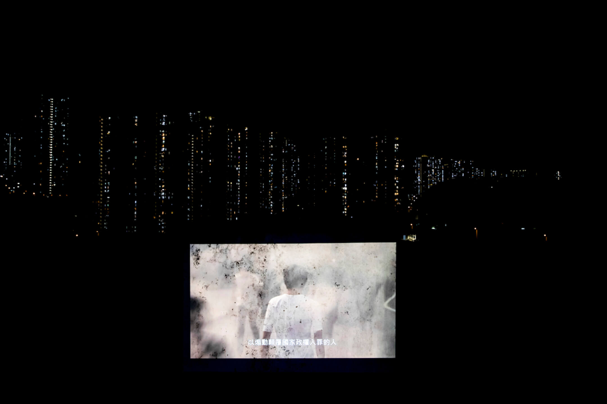
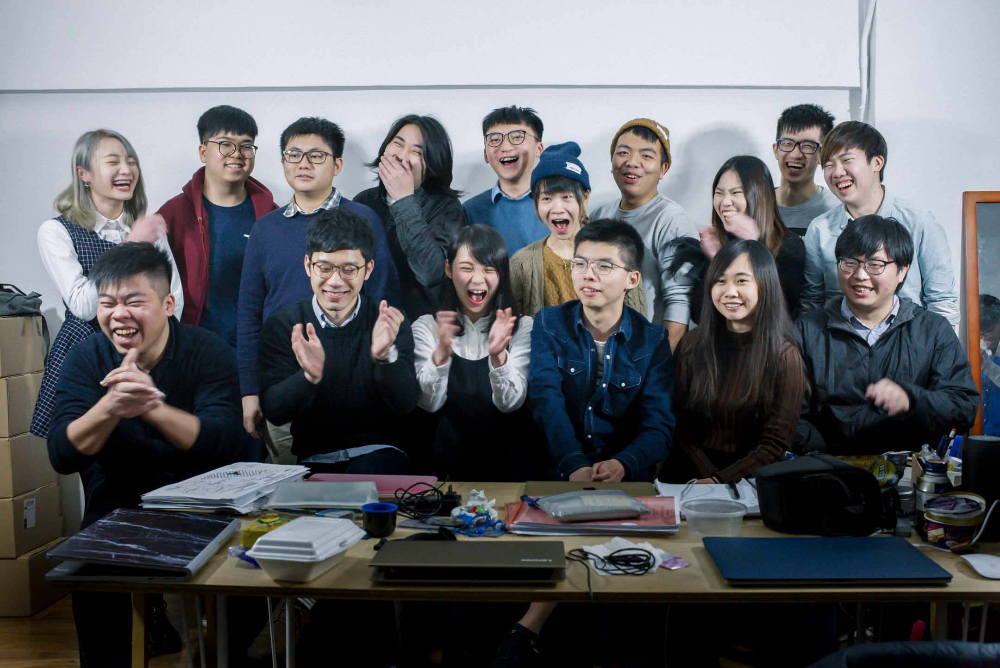
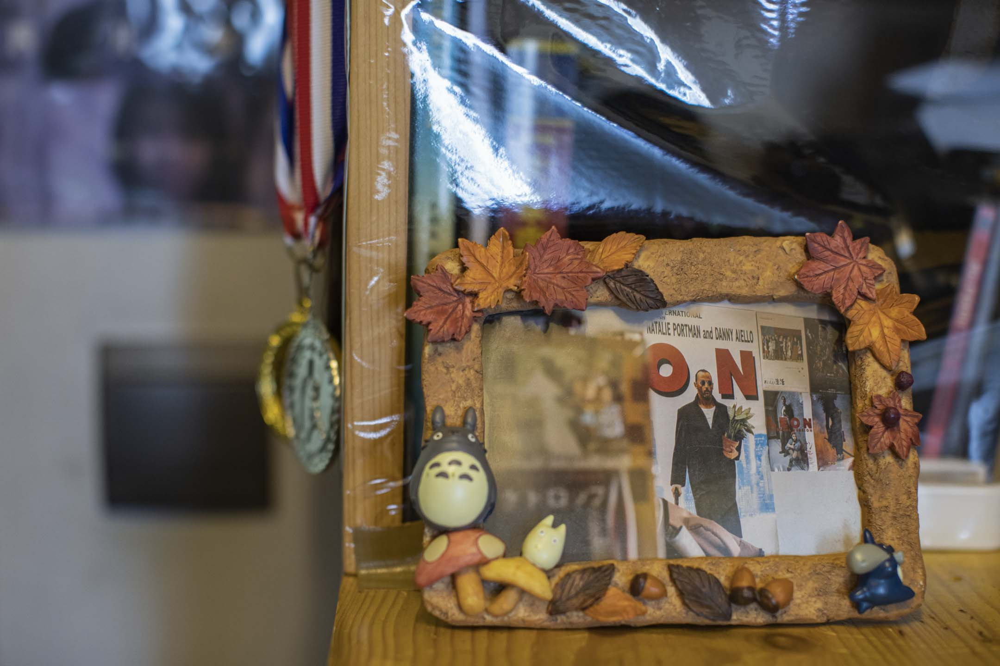
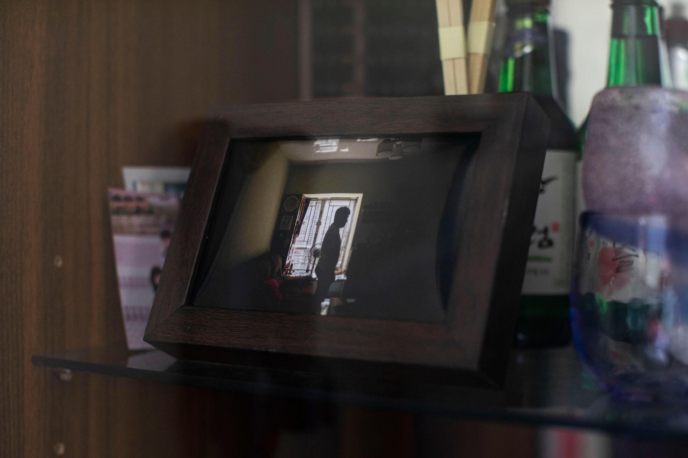

過去一兩年，香港失去了什麼？
在北京和建制眼中，這是一個恢復平靜，重上正途的香港；但在不少市民眼中，此刻的香港一再模糊和陌生。本來一家人，最緊要齊齊整整，現在滿城拘捕，大小移民；本來香港地，什麼都可以講，什麼都可以看，現在禁忌和紅線四處蔓延；本來天跌下來，笑一餐好了，現在玩笑也不能隨便再開……
香港故事，這裏是十個切片、十個記憶。你記憶中的這城，還剩多少？

香港文化領域中，電影文化基因建立得最為完整，陳冠中曾這樣說。60年代張徹、胡金銓的武俠片；70年代李小龍功夫電影；80年代槍戰、武術、雜耍合於一身的喜劇類型；新浪潮顛覆既存模式；至90年代後「只此一家」的警匪黑幫類型片。David Bordwell在《香港電影王國：娛樂的藝術》中寫：「皆盡過火，盡是癲狂。」這也是香港電影之為香港電影的原因：創造力不受掣肘，張狂，專業電影技藝專業，娛樂通俗藝術皆有之。
千禧年後，香港電影因產業滑坡、市場萎縮和政治氣氛，步向衰弱與變種。1993年產近250部電影創下高峰期；1996年起，年入座率從昔日6500萬跌至2200萬，香港製作的電影自僅98部，再跌至2009年的51部。2003年興起中港合拍片，需面對中國電檢審查和13億人口市場，香港電影的題材與銳氣於此有變。
「香港一直引以為傲電影的拍攝空間和制度，全世界也沒有。當年我會說，今日只要你想到題材，明天就能拍了，沒人干涉你。新指引出台後，我不敢這樣說。」資深電影人田啟文這樣回應端傳媒。
他說的，是2021年6月11日，香港政府宣布因應港區國安法實施，修訂《電影檢查條例》：如影片「意圖認同、支持、宣揚、美化、鼓勵或煽動任何犯罪行為或任何可能危害國家安全的行為」，可決定影片是否「不宜上映」、或對電影進行分級、要求刪剪及附加條件。
田啟文籲可以《拆彈專家2》為例，虛構情節如香港國際機場、青馬大橋等設施在片中被炸毀。他反問：整個香港炸了，是不是煽惑？
香港電影由合拍片效應再到被閹割式從根拔起，分水嶺在2019年社會運動及2020年國安法。據影業協會數字，2019年上映港片49部，翌年降至34部，又因疫症三度停業，總票房跌幅達72%。也因運動後警察權力愈發不受控制，不少人質疑香港拿手的警匪片還有沒有未來。
田啟文說：「有的警匪片特別講黑暗面，以前林超賢的《魔警》，放到今日連戲名都麻煩。業界要求法例清晰，否則我們寧願不碰那些題材，這是否行業之福？無人希望如此。」
「香港紀錄片工作者」製作的《理大圍城》由影意志負責發行，多次受建制媒體如《文匯報》等狙擊。原定3月於商業戲院高先首映，後戲院發聲明決定取消。其後數場社區放映亦因各種打壓，被迫取消。
2017年商業影院已拒播由影意志發行的《地厚天高》，創辦人崔允信認為現在即使跟足指示或法律，政權不想你的東西出現，都會想辦法制止。但他認為戲院放映對一套電影很重要，不要自行地下化，「這是言論自由的問題，也是創作的基礎。」此刻他堅持已取得電檢證的《理大圍城》於法律角度仍可在港合法放映。
國安法一週年之際，第15屆鮮浪潮國際短片節宣布，本地競賽作品《執屋》未獲電檢批核，取消放映，導演莫坤菱於明報撰文：「沒有界限的紅線，令一齣短片未知因由地未能如期上映，有傳媒說，這或許是香港的第一齣，但我們心裏澄明，絕對不會是最後一齣。」
全球哪個城市遊行集會最頻密？根據媒體的統計（註一），答案很可能是香港。先不談雨傘運動和反修例運動這類大規模社運，光是2016年，香港就有11854場公眾集會、1304場遊行。
年復一年的集會遊行，以及與之伴隨的街站、大聲公、籌款箱、橫額直幡、義務糾察等，已成為不少市民熟悉的香港記憶。
有說，七一遊行中最早出現的街站，是在2003年的50萬人大遊行。社運人士劉山青寫道，他和長毛梁國雄希望主辦方民陣加入口號「董建華下台」，被拒絕，於是在路上設一個高台，用大聲公領叫「董建華下台」，市民此起彼落響應，有別於大台的街站文化，也開始出現。
「你在那裏開街站、揸着咪，宣傳你自己也可以，好像倫敦的海德公園，踩住一個箱，就一個人開講。」香港市民許志強（化名）說，這是他記得的舊香港。
許志強年逾70歲，過去30多年一路見證香港遊行集會的文化。自1990年開始，他一直為支聯會六四維園燭光晚會做義工，每年提早去維園佈置、搬鐵馬，也去各區開街站，請市民支持平反六四。每年七一遊行、元旦遊行，他也會去，看着人龍中揮舞的直幡和叫喊的口號，他覺得「人可以發聲，有意見可以表達，這是一個進步社會的表現。」
每年六四週年的晚上，他在場內做糾察，從早站到晚維持秩序。他最記得2013年那一夜，晚會在滂沱大雨中提早完結，但是，「一半人沒有走，照樣在這裏，希望雨停。」他穿着雨衣，靜待最後的人離開，衣服濕透，電話也浸壞了。
「我們參加了幾十年晚會，真的很自由。但現在不止沒有了，它還打壓到給人一種恐懼感，」許志強說。
2021年6月4日晚上，維園再無燭光，許志強剛做完白內障手術，眼睛不適，腳也不好使。他本打算拿一個電子燭光到街上走走，卻感覺年紀大了，力不從心。
年輕人袁德智最近覺得，香港傳統意義上的遊行集會已經消失了，大家再也很難一大群人、安全的聚集，但他打算變換形式，全香港打游擊。
20多歲的他不久前與其他本土派青年成立「開站師」，帶一張摺枱、一些單張和一個大聲公，在各區開街站，呼籲市民關注不同議題。
「我要被人看見，」他說，「我們不能夠在家中悼念六四，縱使維園不合法、4人以上（聚集）不合法，你都要找合法的方式堅守公開的悼念，這非常重要。」
每次袁德智開站，總有數十警察前來駐守，市民想要給他們送水，也不敢走近。最近一次，警察向他發出限聚令告票。今年5月，社民連開街站時被人襲擊，也讓袁德智最近添了些擔心。
「以前什麼人都可以示威遊行，不要說六四，你看法輪功，次次遊行都很大陣仗，」現在，許志強覺得有生之年，香港不會再有六四晚會了。
早前，民陣指不會申辦2021年七一遊行，18年來市民走上酷熱街頭，呼籲不同訴求的慣例，也看似告一段落。
註一：The Guardian，2017年9月7日報導，Which city has the most protests?

2018年2月4日，香港眾志全體常委和義工聚在辦事處開會，前排右三為黃之鋒，後排右四為林朗彥。攝：林振東/端傳媒
人生第三次出獄後，林朗彥從幕後走到台前，做了好幾家媒體的訪問。他想起不久前，他和黃之鋒被押回荔枝角收押所，兩人坐在長凳上等待打指模。短暫相聚一小時，黃之鋒提到2021年是學民思潮成立10周年。
「這10年我們真的一起經歷了很多事情，很多東西都試過了，」林朗彥說。
10年前，他和黃之鋒還是中學生，到處找同學簽名、推動校政。「那時空間很開闊，好像有很多possibilities，」他們創立學運組織「學民思潮」，反對政府推行國民教育，「搞學民不過是超投入、勁熱血的課外活動，有點像籃球校隊。」
香港人組織參政的歷史，從70年代的學生運動、工人運動和社會運動開始，那些足跡埋下了80年代民主運動的土壤，撞上香港前途問題的尖峰時刻。1982年，港英政府引入區議會選舉，新一代在港土生土長、出身基層的大學生，懷揣着一套推動民主社會的理想主義，紛紛走上選舉舞台。
2016年4月10日，香港眾志創黨主席羅冠聰、副主席黎汶洛、秘書長黃之鋒等人出席創黨禮。攝：盧翊銘/端傳媒
1986年，最早的參政組織之一「民協」成立。90年代起始，政黨和組織紛紛冒起，政界經歷主權更替，逐漸確立以民主黨、民協、公民黨、工黨等為主的泛民陣營。民主派內部因着時局，時而分裂、時而結盟，也曾爆發世代之爭。
2014年一場雨傘運動後，新世代參政浪潮席捲而來，本土派組織青年新政、本土民主前線吸引了大批年青人的支持。而黃之鋒和林朗彥等人在學民思潮解散後，於2016年組成政黨香港眾志(Demosistō)—— Demos即「人民」，Sistō是拉丁文「站起來」的意思，有別於傳統泛民政黨，他們自張「民主自決」。
2016年立法會大選，非建制派大勝，70議席中奪下30席，香港立法會9樓一度成為民主派和自決派議員的重地，民主黨、工黨、眾志、朱凱廸等相鄰辦公，大家還在走廊栽培各種植物。
「當時我覺得應該將雨傘運動那種力量，尤其是年輕人的力量，像傳統泛民的方式固定下來、發展下去，」林朗彥說，他們試過在地鐵站戴哥斯拉頭套反對《國歌法》，闖入政府總部反對修訂《逃犯條例》，希望突破舊有框條，「我們嘗試令到政治不是那麼dull、死氣沉沉，我覺得這是2016年青年政治所貢獻的事情。」
2021年5月26日，26歲的林朗彥剛剛出獄不久。攝：陳焯煇/端傳媒
他不怕承認，當年他們想沿襲民主派舊路，把街頭抗爭力量以組織、政黨的形式穩固下來，這個路線「現在回看就是錯了，因為政治是動態的」。不同於民主派前人，香港眾志似乎永遠都不會獲得循選舉從政的機會——羅冠聰、黃之鋒、周庭三人，先後被取消議員或參選資格。2020年初，眾志終宣布放棄「自決」綱領。
2020年6月，港區國安法生效前一天，香港眾志解散，羅冠聰7月2日宣布離港，隨後流亡英國。至今，黃之鋒因參與民主派初選被控「顛覆國家政權」被關押，同時因多宗反修例案件罪成，正在監獄服刑。而周庭因6.21包圍警總案後被判囚，剛剛於今年6月12日出獄。爾今，非建制派的政治人物，不論年資、政治光譜，目前至少23人罪成，80名人士遭還柙或保釋候審，16人流亡或離港。
在林朗彥眼中，非建制派年輕人秉持自由思想，去從政參選的機會已經消失，「往後進入體制的，無論建制派、民主派，都一定不存在一種理想主義的參政，一定是一種資源分配或是權力分配的參政。」
林朗彥說，眾志的生命很短暫，卻嘗試證明了新世代可以參與政治、關心公共領域，體現了一種生活中關心政治的可能。他相信，那是新世代自由參政消失後的剩餘物，「那種消失是，消失當中有誕生，誕生之中又有新的毀壞、新的毀滅。」
「幾十年來，不分政治立場，反共、挺共，左中右立場的禁書、雜誌、報紙都賣。」陳叔（化名）對記者這樣說，他經營了兩代的報紙檔在遊客熱門地天星碼頭。報攤上，昔日百家爭鳴，如今只見寂寥。包括業已消失的《蘋果日報》。
香港人曾經擁有出版、言論自由。如今噤若寒蟬。
從前「禁書」在香港，是蓬勃，能致富的出版事業，也彰顯中國邊陲地帶，最光明磊落的閱讀自由、「反動」自由。香港曾是「禁書天堂」，在機場，在遊客熱門地，樓上書店，或中國遊客拖着過關的行李箱，就可能躺着一本又一本中共官場揭秘、權鬥或桃色糾紛的八卦書，也有被中國查禁的歷史或政評等書。90年代至2013年間，二三十年風光的禁書市道裏，成行成市的包括反共政論雜誌如《開放》、《爭鳴》、《前哨》、《動向》，2012年高峰期多逾20種。
自2015年發生銅鑼灣書店事件，不少禁書出版商因經濟、政治壓力結業或者轉為網上營運。港區國安法才是致命一擊，現在走到樓上書局、報紙攤檔或機場，禁書或反共時政雜誌已絕跡。港府據國安法於2020年8月拘捕香港壹傳媒創辦人黎智英；2021年6月17日凍結壹傳媒資產。1995年創刊的《蘋果日報》終被迫停辦，6月24日刊出最後一份報紙。
香港迎來屬於自身的禁書、禁報年代。公共圖書館先後覆檢72本涉嫌違反國安法的書，有圖書館管理員匿名受訪說，第一批覆檢中的書閉架超過一年。因為下架的多不是新書，他認為下指令的高層沒有看過內容，只憑作者、書名決定。
在中學擔任圖書館主任的李心（化名）說，除跟隨公共圖書館下架書單，學校管理層亦指示：「只要有1%的懷疑，都會為安全考慮而下架。」
據她說，在約一兩百人的「中小學圖書館主任TG群組」，普遍做法是將有關雨傘、六四、反修例等圖書下架，造成許多所謂「禁書」公共圖書館未下架，中小學卻已率先下架。李心強調，下架代表「註銷」，即棄之垃圾站，將來的孩子不再知道自己並不知道什麼。「我在的學校下架了香港記者協會出版的《人民不會忘記——八九民運實錄》、潘小濤《國情》、趙紫陽《改革歷程》等。任何一本書下架都很難過，痛苦源於要毀滅自己的真實經驗和信仰。」
獨立出版社「山道」2020年7月出版收錄反修例運動文章《致自由》，六度被印刷廠拒印，曾想過到台灣付印。最後把印刷、訂裝工序分拆後秘密進行，並刪除敏感字句，才能順利在港出版。負責人Sam說，書業四環節，出版、印刷、發行和書店，國安法通過後，業界動蕩，四個版塊都極脆弱，而印刷一環最易受打壓。「印廠旗下員工至少四五十人，被抄家、封舖好危險。聽說去年國慶前後，印廠不斷被海關、消防或地政巡查，建制中人曾向印廠透露，那段時間千萬不要亂印敏感書，會殺雞儆猴。」印廠名字從此不再出現在版權頁。
Sam說：「願意承擔這類出版的書商越來越少，如果大家一齊企實（堅持立場），大家都較安全，我們繼續做，是希望記錄這一刻的香港，每把聲音都值得尊重和被記錄。」
一個細路仔，要花好多心血，裁培教導，他才可以自立成人——80年代，一個政府廣告這樣宣傳家庭教育，四比三的舊電視機裏展現了核心家庭的和睦場景。在這臨海的亞熱帶半島上，香港人口在戰後迅速增加，家庭數量自80年代約131萬，倍增至今天的269萬。經歷過戰亂和政治運動的大陸人口，在香港遍地黃金的日子中勤力打拼，但求一家人齊齊整整，許是很多老一輩港人的人生目標。
反修例運動爆發後，大搜捕和移民潮拆散了不少香港家庭。警方至今共拘捕10261人，2629人被檢控，其中478人未滿18歲，佔檢控數字近兩成。他們身後牽扯着父母、伴侶或兄弟姊妹。大量案件仍在持續審判，最新被判有罪的有780人，散落在香港監獄、勞教中心、更生中心和教導所。而一些被捕者的家人已經移民或流亡，未知重聚有期抑或無期。
最近一次生日，50多歲的岑父和老婆、小兒子和他的女朋友拍了一張合照。他用手機把大兒子的樣子拼上合照，但不太懂修飾圖邊，照片看起來有點突兀。不過，他還是喜孜孜地把合成相片寄給在塘福懲教所服刑的大兒子。
大兒子岑曉麟是第一宗經暴動罪審訊罪成的被告，他今年27歲，被控於2019年6月26日包圍警總並追打一名便衣警，導致警察口中痱滋爆裂。岑最終暴動及普通襲擊罪成，被判入獄4年。


自此，他的房間就一直空着。岑父本職地盤工程，最近很少開工，忙着弄物資、寫信太累了。老婆工作忙碌，他負責煮飯，準備飯菜的時候看到刻上大兒子名字的筷子，吸塵時看到大兒子的拖鞋，「這事每天都會發生，感覺到少了個人在家。」
一些被告家人覺得承受不了，把子女的房門關上，但岑父每天都開着兒子的房門。
岑父出生於60年代末的香港，在拮据中長大，88年拍拖後成婚，兩夫婦想像中的家庭生活，就是平平淡淡的生小孩，撫養他們成人後退休，靜候兩個兒子成家立室。
岑父確是沒想過，「自警察衝入家門那一刻全都變了。」兒子被帶離被告席後，岑家相擁而哭的畫面，已經是大半年前的事。岑媽每天看着家裏日曆倒數：又過了一天，又過了一個月。現在，許多被告仍然徘徊在各級法院。岑母身邊有幾個朋友的親人被捕，其中一個兒子入獄後，只得兩夫妻在家，「也多跟她聊天吧，問她兒子在裏面的生活怎樣。」
岑父認識了一個入獄年輕人的嫲嫲，「他想看書，但嫲嫲又不懂得訂書，我便幫忙。老人家山長水遠跑到塘福也很辛苦，他爸爸卻還是不理他。」岑父覺得，「這一萬多個的家庭，根本修補不到啊。修補不到。」
香港打工仔要享受天倫樂不容易，以前兒子出外打工，一家人吃飯很少齊人。大兒子長大後話不多，岑父常覺得不明白他在想什麼，岑母有時會藉口說去油麻地買水果，偷偷看大兒子在果欄工作如何。橫亙眼前的這場災難，反而使一些家庭更緊密了。
「我現在寫信給他也說，你有什麼要跟我們講。這件事上，唯一得到的就是和他關係變好。」岑父說。
去年，小兒子帶了隻流浪貓回家。白貓怕人，常窩在大兒子床上睡覺。「貓來了便要照顧牠，也不會把牠當阿仔那樣，只是在家裏有東西在活動……」岑母若有所思，岑父接話，「家裏就沒那麼靜。」等大兒子出來，便能正式見見這家庭新成員了。
2021年4月，鍾子瑩（化名）翻開香港DSE的通識科試卷，發現沒有一道政治相關的題目。早前上堂，老師說通識科中的法治問題，該是不會再考了。她不太驚訝，一向成績不錯的她只是覺得「考試變得顯淺」，不再需要她花時間去思辯複雜的問題。
自今年9月新學年起，通識科將易名並調整內容，再待兩屆學子通過DSE通識科考試後，這個科目將正式走入歷史。
最初，董建華是通識科必修必考的推手。千禧之年，時任特首的他想改革教育，培養學生「樂於學習、善於溝通、勇於承擔、敢於創新」。通識科早於1992年已經開設，本為高中生選修科，經過一輪研究諮詢，教育統籌委員會下的工作小組建議將之納入新學制「3+3+4」（註一）下的必修必考科目，獲政府採納。
2012年，DSE（註二）首年開考，通識科成為高中生考大學的必經關卡。時任教育統籌局局長李國章任內報告，指通識科「能幫助學生成為獨立思考的終身學習者」。
不過，新設的通識科最初使老師大感頭痛，社會上亦有質疑聲音。教協2015年調查顯示，通識科連續6年被教師選為最感困難的項目，困難包括難以照顧學生差異、隨着時事更新教材的龐大工作量等等。
政府與學校之間反覆拉鋸下，教育界最終翻過這一頁，逐漸爭取到國際間對新學制的認證和信心。然而，不過6年光景，一切改頭換面。2012年反國教運動、2014年雨傘運動後，建制陣營將矛頭指向教育，並稱通識科使學生變得激進。
2020年9月﹐大考前夕，鍾子瑩在最後一堂通識課上學習「法治」。老師拿出學校設計的筆記，詳列不同政治立場的人如何看法治的定義。當中，有人認為守法是法治，也有前港大法律學院副教授戴耀廷所提出的「法治四層次」，最高層次是「以法達義」。
「有人覺得（人大）釋法是符合法治，有人覺得釋法是破壞（法治），我和同學便會明白為什麼他們會有這麼不同的看法，就是因為對法治定義不同。」她喜歡通識科緊貼時事的特點，覺得這種不斷更新知識的過程很好玩，「我也學到很多中國的東西。因為我們要看很多資料，什麼精準扶貧、氣候問題，真的是看了才會深入了解。」
反修例運動爆發後，董建華說，通識教育「直情失敗了」。現任特首林鄭月娥說，教育不可以成為「無掩雞籠」。港澳辦副主任張曉明說，教育領域需要正本清源。教育局始大幅整頓通識科，通識課本以往不用送審，局方於2019年推出「專業諮詢服務」，多間出版社「自願送審」；有經審視的新版書介紹法治時刪改「三權分立」內容，部分書的公民抗命、六四事件篇幅亦被刪減。
2021年，政府宣布通識科自今年9月新學年改名為「公民與社會發展科」，須教國家成就、香港自古以來是中國領土等內容，教育局指教師不應引導學生探究議題時「囿於正反二元對立」，這一科的評分，往後也只分達標不達標。
「往後評分改成只評達標、不達標，那麼我純粹循規蹈矩做好每一件事，合格便可以了。」鍾子瑩覺得，這改革不鼓勵學生思考。原本的通識科分成不同單元，包括Hong Kong Today（今日香港）和 Modern China（現代中國），她說最近班上同學打趣說，以後不用分了，因為「Hong Kong Today 跟 Modern China 都是一樣的。」
鍾子瑩說，她的很多同學已隨家人移民英國或加拿大，而她也正準備到外國升學。
註一：「3+3+4」學制於2009年推行，即3年初中、3年高中、4年大學本科，取代原本3年初中、2年高中、2年預科、3年大學本科的安排。新學制中，學生高中時除修讀中、英、數及通識，須選修2或3個科目才能考大學。
註二：「文憑試」全名香港中學文憑考試，又稱DSE，取代舊學制裡中五和中七的兩次公開試。香港高中生以文憑試成績，即可透過「大學聯合招生辦法」（JUPAS）入讀各大學或大專院校的課程。
街頭合唱作為抗議快閃，遊行集會場合的行為藝術、舞蹈、誦詩與歌聲，巷頭巷尾塗鴉……香港確曾被稱為「抗議之都」，抗爭藝術出現於生活空間，也是這城絕不陌生的「風景」。
這「風景」不僅日常遇到，也是新聞談資。早期大規模見到是2005年世貿部長級會議在港舉行，來港示威的韓農，用上苦行、傳統舞蹈、街頭音樂，跟彼時重視遊行秩序感的香港「模範生」大相徑庭。其後天星、皇后碼頭保育、反高鐵，都有藝術人在場默站、讀詩、擊鼓歌唱……「這一代人六四」行動自2009年起每個6月3日晚上，行為藝術家聚於銅鑼灣東角道，以身體表達對六四的思考。那些年，時代廣場外、匯豐總行下，都可見這些街道藝術形影。2012年，一班獨立音樂人抗衡「起動九龍東」，以機動性高的遊擊Show於窄巷和天橋底快閃演出。
其實也有本土脈絡，早自7、80年代「民眾劇社」、「黑鳥」等團體的探索，90年代成立的社運組織「自治八樓」也強調都市文化行動，成為香港許多後世文藝抗爭青年的最初啓蒙。
及至雨傘運動，特別是反修例街頭，思想、自由、藝術與民眾的歌聲和巧思一起流動。城市天橋底、燈柱、馬路和隧道牆身都像長了喉嚨，再變成如今被漆過的光滑——城市張大喉嚨，卻無聲發出。
「亂入」街景的還有九龍皇帝曾灶財，人稱「香港街頭塗鴉始祖」，於街塗鴉五十載，墨寶被博物館收藏保育。惟2021年3月24日，觀塘繞道天橋橋墩上，九龍皇帝墨寶得到「抗爭文宣」同等待遇：被人用紅漆打上交叉。香港塗鴉第一人MC仁曾說：「塗鴉反映自由世界的容忍程度。」此事橫跨兩段時空的香港，見證對公共空間任何形式、任何帶示威嫌疑的表達，一種後運動年代神經質式的驅逐，和拭除。

2020年開始，街道尤為「兇險」。限聚令為表，國安法為裏，各種身體現場、城市流動的奇觀及自由表達被深度限制，藝術家、音樂人、社運青年和市民在街頭拓展過的自由疆界幾近沒落。
5月21日街頭表演者Oliver Ma被警方以「擾亂公眾秩序」名義拘捕。結他、音箱、咪架（麥克風架）全數沒收。其後被票控於公眾地方沒有戴口罩，罰款3500港元。國安法實施後，Oliver便預感警察以不同罪名針對他，因他是在抗爭現場唱《願榮光歸香港》的Busker之一。
2021年，黃國才的街頭藝術表演也到了第十年，「來到一個時代的終結。因為我不會再做了」。他說，2021年世界更惡，更腐敗，也是（藝術）轉化的時候。國安法出爐翌日，他曾裝扮成血拼購物的土豪遊客，想測試國安法紅線。街道不再如同往日，那天他差點中胡椒彈槍。「連在街上行路的自由也被取締，法律賦予集會、遊行、言論、藝術表達自由的權利都失去了。」
「我們從來沒有因為做創作，要找律師傍身。」上年六四前夕，行為藝術家三木預早找了律師，做好出事的準備，今年六四也做了最壞打算。他曾在2002、2007年去北京做關於六四的作品，國安上門盤問，甚至翌晨站在他床邊，最後幸全身而退。「現在香港和大陸沒分別。盡量做該做的事，與其說基於藝術，不如說基於信念。」
2021年香港，成了行為藝術家預感被收監之地。
「以宗教方式把香港人的家庭情感牢牢栓在一起。」導演林奕華說的，可是誰呢？
還不就是1967年開台的電視廣播有限公司，簡稱TVB或無線，首家在香港引入免費無線廣播電視，乘70年代經濟起飛，旋即滿足大眾娛樂消費慾望。學者馬傑偉曾指，當年的香港人沒有一個穩定的文化取向，電視媒介高速成長，馬上成為孕育文化認同和社會取向的搖籃。70至80年代初，黃金檔劇集吸引觀眾人數佔當時總人口半數還多。最受歡迎的《歡樂今宵》，令坊間幾將無線等同於電視本身；多齣劇集收視率也屢見新高。
是香港人的集體回憶嗎？那些年，香港人放工趕回家追劇，食肆和街道變得水靜河飛，電視成為佐餐的最好味醬汁。90年代初，黃金檔收視率穩佔7成。盈利豐厚，創作資源和條件，變相也為電影行業培訓人才，帶動音樂唱片行業和粵語流行音樂。
曾經，TVB幾乎是每個香港家庭的第一台。而今卻形象大變，成為港人心中反智、保守和「事事旦旦」（隨隨便便）的「官媒」代表。即使家中長輩或慣性按TVB，下一世代也早分道揚鑣，各有各屏幕，建構相迥的文化認同。
經年流水作業，保守思想，公司勢力山頭林立及自保，固是這衰落的死結；最近的《開心大綜藝》更炒《歡樂今宵》冷飯，飽受網民揶揄。
90後Alvin（化名）在TVB任製作助理及導演三年多，見證大台最致命的沒落：2019年運動，TVB選擇性報導和抹黑示威者，引起社會反彈與杯葛。社運前後，超過半年沒有廣告收入，亦被不少人罷看。國安法後，Alvin有感創作自由再收緊，開始要剪輯國安法宣傳片，「好早TVB已決定面向中國大陸、東南亞，因市場早已不在香港。」
TVB非執行董事黎瑞剛表示，計劃在大灣區開設新的製作中心，發展成為立足香港的國際華人電視台。
定位不再是香港人的電視台，只會在下一代人的生活經驗中漸漸消失。
與TVB走在同一條沒落於本土之路上的，還有一代歌神陳奕迅。巧合是，他在TVB舉辦新秀歌唱大賽奪冠入行。1982年第一屆新秀冠軍是梅艷芳，與後來的譚詠麟、張國榮、陳百強等作為7、80年代偶像明星，跨界前衛多元，踏上紅館像一場場巨星試煉洗禮。及至90年代四大天王天后風靡，樂隊組合達明一派、Beyond等平分春色。若以黃霑定義1974年為粵語流行歌劃時代起點，30年間香港輸出的Canto-Pop，紅遍華人社群，滋養幾代香港人。
至97年後，香港唱片工業滑入下坡路，偶像隊伍「青黃不接」，商業化主導、情歌泛濫、歌星品牌化等困境畢現。行業日漸萎靡之時，Eason紅遍20年。他的音樂佔據一代港人聽粵語流行歌的記憶，「歌神」稱號是自70年代許冠傑、90年代張學友那裏接下的。但要北上搵食（混飯吃）——那綜藝、流量、抖音之地，陪伴港人成長的多少位明星，早早在那相見歡？
轉眼2021年，似是香港流行樂壇模式一個不美麗的尾注：陳奕迅發表聲明，「堅決抵制任何污名化中國的行為」，單方面終止與反對新彊棉的品牌Adidas合作，歌迷粉絲軒然大波，輿論反撲。
曾越愛，也越恨，偶像隕歿，飯檯新例，嗚呼哀哉。
咩都笑一餐，「無厘頭」傳統，做人最緊要開心，一度是港式文化的精髓。從最初的50年代開始，莫康時的《擺錯迷魂陣》記述當年新移民來港的影響，60年代秦劍的《難兄難弟》笑貧窮，笑是發洩，笑是逃避，笑也可能是一種逼於無奈的反應。
朱石麟執導的《誤佳期》講述一對情人在房租昂貴、勞工欠保障和地主拆屋的壓力下延誤婚期。70年代打工仔笑罵現實，「半斤八兩，做到隻積咁嘅樣……」喜劇藝人許氏三兄弟的電影《半斤八兩》，主題曲唱得街知巷聞。
事隔多年，這些故事聽來仍然熟悉，人們還能笑得出嗎？
香港大學比較文學系講師羅玉華在書中寫道，香港是笑話之都實不為過，「但奇怪吊詭的是，據聞香港人都不愛笑。」荒誕與笑聲，本是一體兩面。
踏入過渡期，香港人眼見中英談判、六四鎮壓，有種集體情緒正在蘊釀，並找到宣泄的出口——黃子華在92年棟篤笑《跟住去邊度》講港人的焦慮，一語道破「97即是把我們這些只是掛住跑馬，將做中國人當是業餘嗜好的人，一到了97，做中國人變了全職職業」；而周星馳電影更爆發異常光彩，個個觀眾急欲解讀，自我治療。
影評人朗天曾說，「97之前周星馳的戲是很 work 的，因為我們有一個限期，有一個創傷。」
傳媒人曾志豪當年還是中學生，也曾經在戲院裏跟其他市民一同大笑，「周星馳早期拍《整蠱專家》，主角吃誠實豆沙包，說李鵬是最偉大的領袖，（後來揭示吃錯謊言豆沙包）很直白。《國產凌凌漆》爐火純青，主角發現（本為同伴的中國特工）袁詠儀是射傷他的人，說打打殺殺唔好煩我，帶上鹹帶（色情影碟）就走了。」
2021年，43歲的曾志豪才意會到那意興䦨珊，「政治很複雜，身邊的人害你又幫你，這麼煩擾，不如專注自己的需要和感受。」
香港電台停播《頭條新聞》後（註一），曾志豪早就預計，他很快不能主持另一個港台節目《瘋Show快活人》。不出所料，2021年6月下旬，他錄完節目後被立即解僱。
過去30年，《頭條新聞》成為香港電視史上一個受市民愛戴的政論節目，無論最後一任港督彭定康，抑或時任港澳辦主任魯平，都可以成為節目中點評或諷刺的對象。曾志豪2007年加入節目，與吳志森一唱一和，扮演「小豪子」與「太后」，諷刺時弊。他覺得，「政制有局限，講出嚟、出啖氣，市民有個出路。」
一如黃子華所言，笑話的創作本質，「說到底關乎每個人最大的關懷是什麼。」
不管時局如何，諷刺和幽默像是《國王的新衣》中小朋友的話，引發普通人笑得夠響夠亮，足夠刺耳。「小朋友指出國王沒穿衣服後，很多人轉軚（反過來）笑國王。一個豆丁笑你沒着衫，令其他人大膽了，政權不想。」曾志豪說。
「香港以前好玩得，乜都講得。我們的社會明顯沒了那種自信，」他說，「童話有大團圓結局，但國王嬲豬（生氣）就是悲劇。」
註一：2020年2月，《頭條新聞》播出諷刺警方的情節，收到大量投訴，通訊事務局一度警告香港電台。後來港台宣布暫停製作節目，同年6月19日播出目前最後一集。
香港最早期建造行人天橋，是為了方便人依山而走，橫渡溪流。
1963年，灣仔禮頓道正式興建了最早的行人天橋。80年代，人口隨着經濟飛騰而逐漸稠密，政府把橋組合行人道路網。全港今天有990條行人天橋。
起初，橋只是過路處，後來成為市民聚首和宣示想法的場所。雨傘運動時，橋上拉起了「我要真普選」的橫額。反修例運動爆發時，市民包圍立法會，他們在中信天橋上俯瞰夏慤道的情勢，向人們拋出雨傘抵禦催淚煙霧。各區各處，市民佔據大街，也聚集於天橋，有的示威者拋擲雜物堵路，防暴警察開始上橋掃蕩。
在上水天橋，一個少年為了躲避追捕，半個身跳出橋外，險些墜落。
自此天橋不再一樣，穿過紅磡隧道，灣仔告士打道，金鐘夏慤道，一直到西環的干諾道西，60多條空中走道的兩旁都安上了鐵欄圍網。港鐵亦在其路軌範圍內的36條行人天橋，加高圍網。路政署回覆端傳媒，自2019年底，因公眾安全理由在天橋加設臨時圍網，防止有人向主要幹道拋擲雜物，影響行人和行車安全；這個安排是「政府的集體決定」。
夏慤道
干諾道西
告士打道
告士打道

大老山公路

興芳路
吐露港公路
告士打道
東區海底隧道
鳳舞街
人們很少再於天橋上停留，不論是為了公共的還是私人的。夜裏，讀詩人呂永佳的〈天橋上看風景〉，悄然回到無人的銅鑼灣。
深夜的時候，熱風依舊吹過馬路
紅燈不再是紅燈，電車路上再無電車
崇光百貨不再是崇光百貨
廣場上的大鐘無人再看
深夜的時候，它們已經失語
時間彷彿被拉長了
街道彷彿懂得成長
我們找回自己的臉和眼睛
在深夜悄悄滑下
走上駱克道、波斯富街
在那還亮的天橋上，躲雨、安靜地等待
點菸，些微寂寞。
而我們，突然憔悴